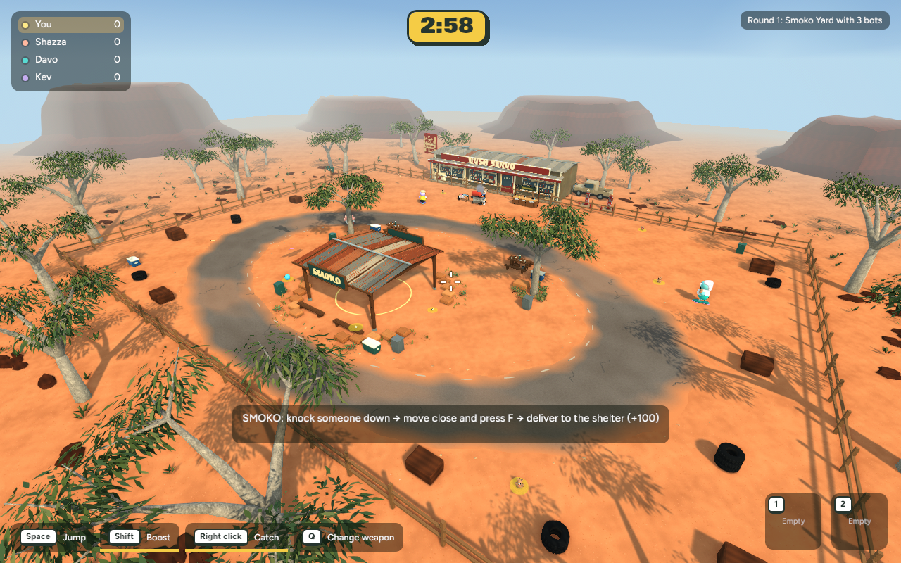
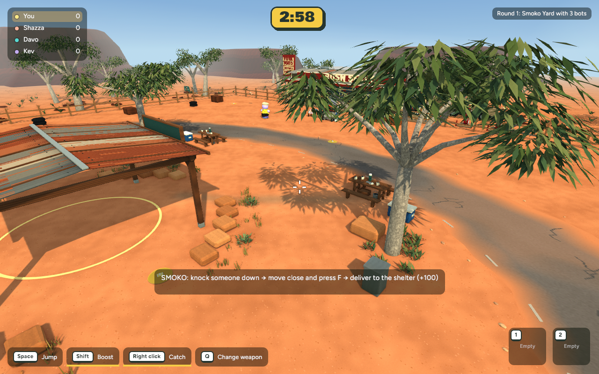
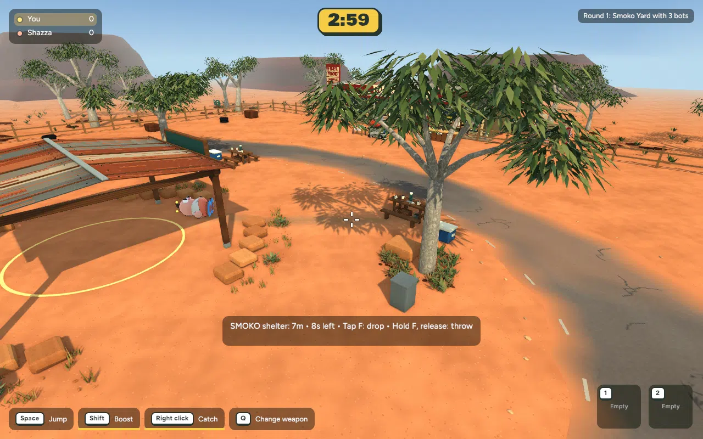

Before

After

Actual native game captures — 31 October 2026. Three grouped patches of low sandstone gravel, dry grass and saltbush within the arena. Existing cover and all routes preserved.



+1,731 triangles, one material batch, no new textures. Frame times close to baseline; Smoko delivery and Backyard checks pass. User approved commit/push, including the earlier ground and prop work. Browser not published.
Verification and recovery